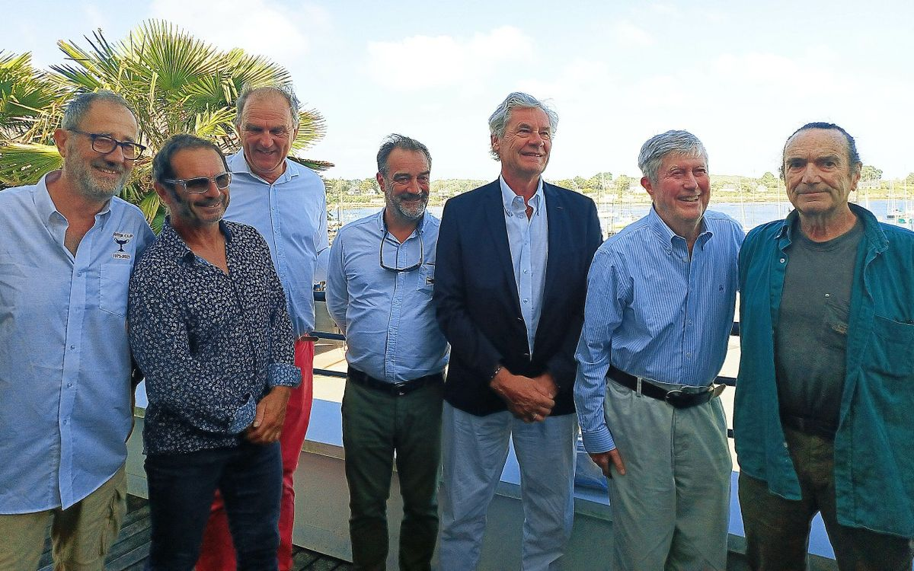

Une légende de la course au large des années 70, pour faire renaître une classe "revival" entre les
classiques en bois et les tout-en-carbone !
Un mélange de projet sportif culturel et durable (pas besoin de construire un bateau neuf pour faire le Spi Ouest).
Remise en route d'un bateau légendaire avec le soutien d'une équipe de coureurs au large au palmarès impressionnant : Jimmy (coureur au large et député), Amiral Philippe Coindreau (créateur du grand prix de l'école navale), Géry Trentesaux (vice-président du YCF) et quelques autres pour participer avec ce Carter 37 à un circuit de régate classique en regroupant des équipages expérimentés et non expérimentés.
À travers ce programme nous voulons participer au développement de la jauge IRC vintage qui permet aux anciens bateaux des années 70 à 90 de courir dans une classe active qui promeut l'utilisation de bateaux performant , déjà existant et d'une valeur patrimoniale, historique et culturelle reconnue.
Régater à un haut niveau sur ces bateaux plutôt que de toujours chercher le bateau neuf, c'est aussi un bel un exemple d'économie circulaire dans la voile sportive.
Pordin-Nancq est une légende de la course au large et nombreux sont les marins célèbres qui ont écrit l'histoire de la voile de compétition à avoir navigué à son bord. Il a participé notamment au Fasnet 1979, avec 2 knock-down (tours complets, 180° de gîte, quille en l'air !) et le mât d'origine est toujours en place 34 ans plus tard. Les voiles sont neuves, par contre !
En 2023, nous avons reçu son créateur, l'architecte américain Dick Carter, au cours de 2 jours de régates et de conférence, à La Trinité sur Mer.
Cette première Carter Cup organisée par Passe‑Coque a été un beau succès.

PJ Jannin, Yves Le Blevec, Jimmy, Thierry Bujon de l'Estang, Jacques Philippe Roux, Dick Carter, Jean-Yves Terlain